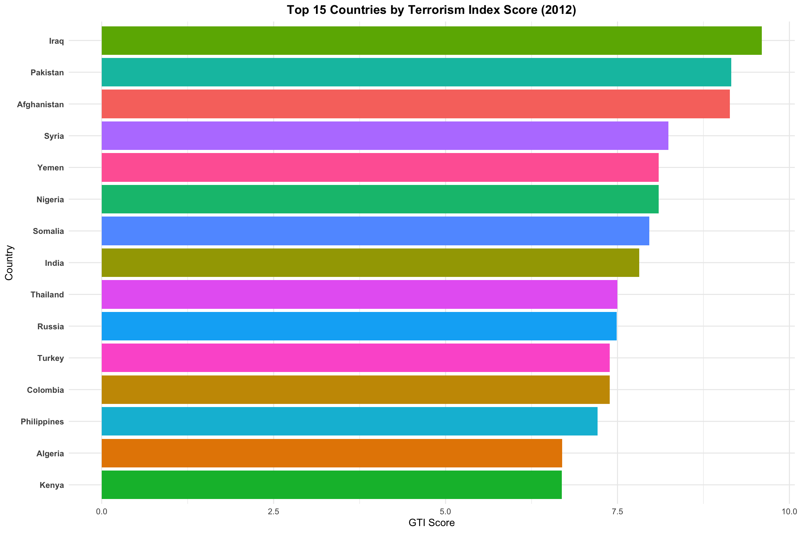
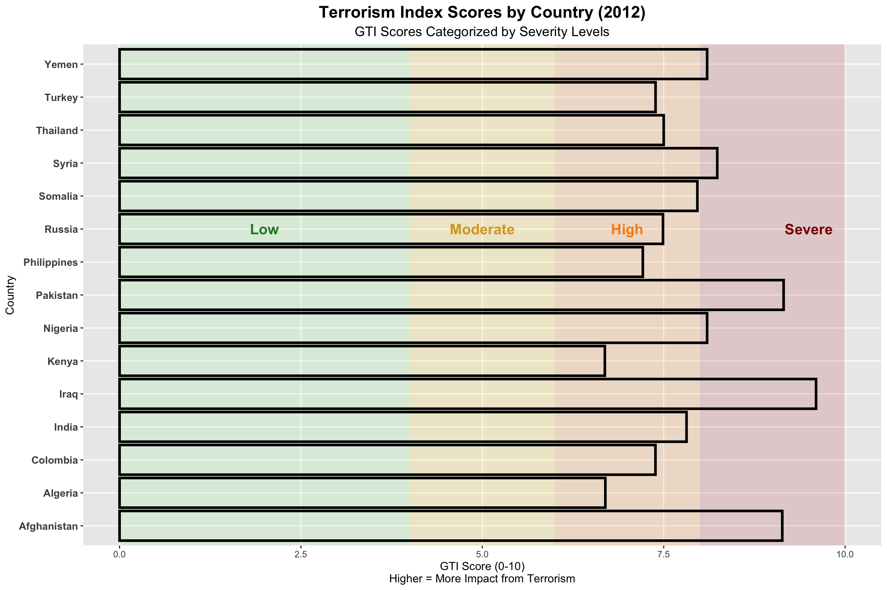
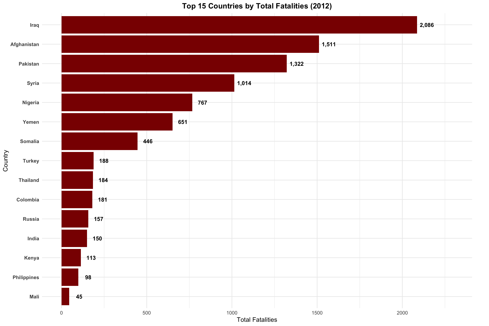
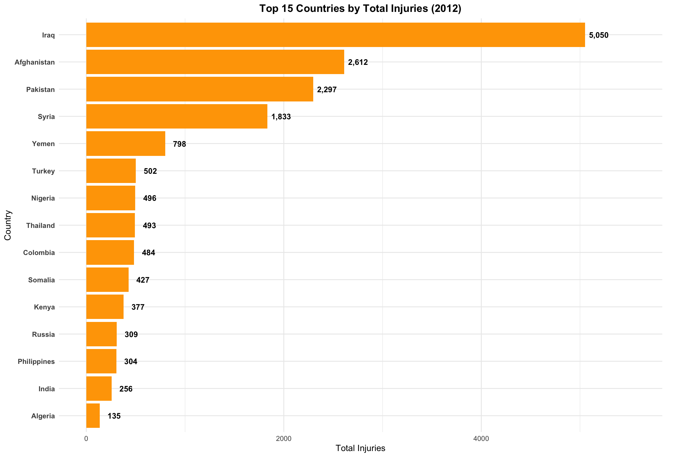
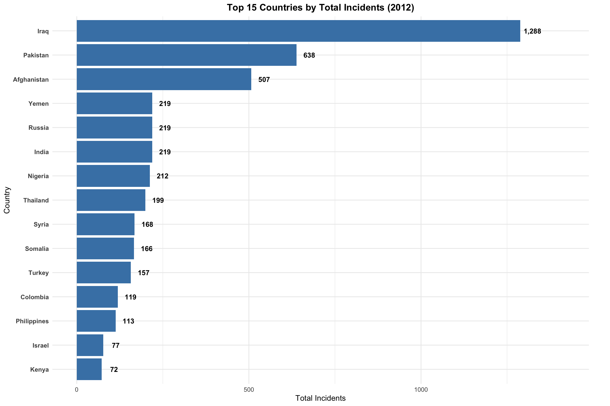
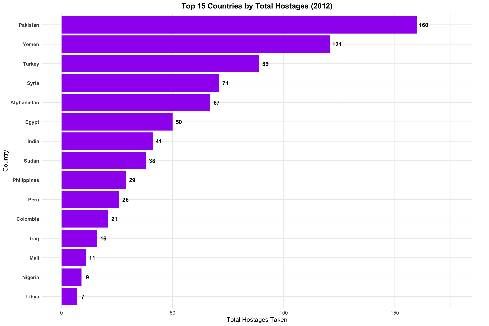
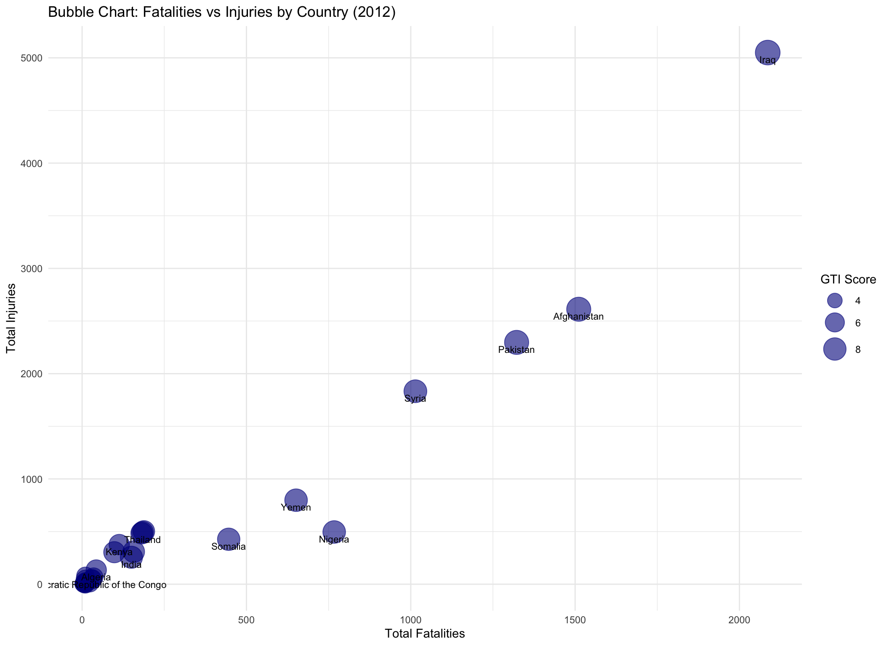

This analysis explores the Global Terrorism Index (GTI) data in 2012, examining trends and patterns in terrorism impact across countries. The GTI is a comprehensive measure that incorporates incidents, fatalities, injuries, and hostage situations to quantify the impact of terrorism globally.
Terrorism Index Overview
The first visualization shows the overall trend of GTI scores for the top 15 most affected countries in 2012. This provides a comparative view of how terrorism impact has evolved over time across these nations.
Code
# Plot the dataggplot(top15, aes(x =reorder(Country, Score), y = Score, fill = Country)) +geom_col() +coord_flip() +labs(title ="Top 15 Countries by Terrorism Index Score (2012)",y ="GTI Score", x ="Country") +theme_minimal() +theme(plot.title =element_text(hjust =0.5, face ="bold"),axis.text.y =element_text(face ="bold"),legend.position ="none" )

GTI Scores for Top 15 Most Affected Countries (2012)
Key Insights:
• Afghanistan has consistently maintained the highest GTI score throughout most of the period • Iraq shows a significant decline in terrorism impact since its peak around 2014-2015 • Several countries show recent increases in their GTI scores, suggesting emerging terrorism hotspots • The overall pattern reveals fluctuating impacts, indicating the dynamic nature of terrorism threats globally
Detailed Country Analysis with Severity Classification
This visualization breaks down the terrorism index trends by country with clear severity classifications. The background color bands indicate different severity levels (Severe, High, Moderate, Low), providing context for interpreting the GTI scores.
Code
# Plot the data for top 15 countriesggplot(top15, aes(x = Country, y = Score)) +# Severity background bands (more visible)annotate("rect", xmin =-Inf, xmax =Inf, ymin =8, ymax =10,fill ="#B22222", alpha =0.15) +annotate("rect", xmin =-Inf, xmax =Inf, ymin =6, ymax =8,fill ="#FF8C00", alpha =0.15) +annotate("rect", xmin =-Inf, xmax =Inf, ymin =4, ymax =6,fill ="#FFD700", alpha =0.15) +annotate("rect", xmin =-Inf, xmax =Inf, ymin =0, ymax =4,fill ="#90EE90", alpha =0.15) +# Add labels to indicate severity zonesannotate("text", x =10, y =9.5, label ="Severe", color ="#8B0000", size =5, fontface ="bold") +annotate("text", x =10, y =7, label ="High", color ="#FF8C00", size =5, fontface ="bold") +annotate("text", x =10, y =5, label ="Moderate", color ="#DAA520", size =5, fontface ="bold") +annotate("text", x =10, y =2, label ="Low", color ="#228B22", size =5, fontface ="bold") +# Main bar chartgeom_bar(stat ="identity", fill =NA, color ="#000000", linewidth =1.2) +# Flip coordinates for better readabilitycoord_flip() +scale_x_discrete() +# Labels and titleslabs(title ="Terrorism Index Scores by Country (2012)",subtitle ="GTI Scores Categorized by Severity Levels",x ="Country",y ="GTI Score (0-10)\nHigher = More Impact from Terrorism" ) +theme(plot.title =element_text(size =16, face ="bold", hjust =0.5),plot.subtitle =element_text(size =13, hjust =0.5),axis.text.y =element_text(size =10, face ="bold"),panel.grid.minor =element_blank(),legend.position ="none" )

Terrorism Index Trends by Country (2012), with Severity Levels
Key Insights:
• Most countries have experienced periods in the “High” to “Severe” range during the decade • Some countries show clear improvement patterns (Iraq, Syria, Nigeria) • Others demonstrate concerning upward trends (Burkina Faso, Mali) • Afghanistan has remained consistently in the “Severe” category • The severity classification provides important context for understanding the relative impact of terrorism
Impact Analysis: Casualties and Incidents
Top 15 Countries by Total Fatalities
This visualization shows the countries with the highest number of terrorism-related fatalities over the 2012-2022 period. The number of fatalities is a direct measure of the human cost of terrorism.
Code
top_deaths <- df_clean %>%arrange(desc(Fatalities)) %>%select(Country, Fatalities) %>%slice_head(n =15)ggplot(top_deaths, aes(x =reorder(Country, Fatalities), y = Fatalities)) +geom_col(fill ="darkred") +# Add value labels at the end of each bargeom_text(aes(label =format(Fatalities, big.mark =",")),hjust =-0.2, color ="black", fontface ="bold", size =3.5) +coord_flip(clip ="off") +# Prevent clipping of labelsscale_y_continuous(limits =function(x) c(0, x[2] *1.1)) +# Expand y-axis to make room for labelslabs(title ="Top 15 Countries by Total Fatalities (2012)",x ="Country", y ="Total Fatalities") +theme_minimal() +theme(plot.title =element_text(face ="bold", hjust =0.5),axis.text.y =element_text(face ="bold"),plot.margin =margin(5.5, 30, 5.5, 5.5) # Add right margin for labels )

Countries with Highest Terrorism-Related Fatalities (2012)
Top 15 Countries by Total Injuries
Beyond fatalities, injuries represent another significant impact of terrorism. This visualization shows the countries with the highest number of terrorism-related injuries, which often outnumber fatalities and create long-term burdens on healthcare systems.
Code
top_injuries <- df_clean %>%arrange(desc(Injuries)) %>%select(Country, Injuries) %>%slice_head(n =15)ggplot(top_injuries, aes(x =reorder(Country, Injuries), y = Injuries)) +geom_col(fill ="orange") +# Add value labels at the end of each bargeom_text(aes(label =format(Injuries, big.mark =",")),hjust =-0.2, color ="black", fontface ="bold", size =3.5) +coord_flip(clip ="off") +# Prevent clipping of labelsscale_y_continuous(limits =function(x) c(0, x[2] *1.1)) +# Expand y-axis to make room for labelslabs(title ="Top 15 Countries by Total Injuries (2012)",x ="Country", y ="Total Injuries") +theme_minimal() +theme(plot.title =element_text(face ="bold", hjust =0.5),axis.text.y =element_text(face ="bold"),plot.margin =margin(5.5, 30, 5.5, 5.5) # Add right margin for labels )

Countries with Highest Terrorism-Related Injuries (2012)
Top 15 Countries by Total Incidents
The number of terrorist incidents provides a measure of the frequency of attacks, regardless of their scale. This visualization highlights countries experiencing the highest number of terrorism events during the study period.
Code
top_incidents <- df_clean %>%arrange(desc(Incidents)) %>%select(Country, Incidents) %>%slice_head(n =15)ggplot(top_incidents, aes(x =reorder(Country, Incidents), y = Incidents)) +geom_col(fill ="steelblue") +# Add value labels at the end of each bargeom_text(aes(label =format(Incidents, big.mark =",")),hjust =-0.2, color ="black", fontface ="bold", size =3.5) +coord_flip(clip ="off") +# Prevent clipping of labelsscale_y_continuous(limits =function(x) c(0, x[2] *1.1)) +# Expand y-axis to make room for labelslabs(title ="Top 15 Countries by Total Incidents (2012)",x ="Country", y ="Total Incidents") +theme_minimal() +theme(plot.title =element_text(face ="bold", hjust =0.5),axis.text.y =element_text(face ="bold"),plot.margin =margin(5.5, 30, 5.5, 5.5) # Add right margin for labels )

Countries with Highest Number of Terrorist Incidents (2012)
Top 15 Countries by Total Hostages
Code
top_hostages <- df_clean %>%arrange(desc(Hostages)) %>%select(Country, Hostages) %>%slice_head(n =15)ggplot(top_hostages, aes(x =reorder(Country, Hostages), y = Hostages)) +geom_col(fill ="purple") +# Add value labels at the end of each bargeom_text(aes(label =format(Hostages, big.mark =",")),hjust =-0.2, color ="black", fontface ="bold", size =3.5) +coord_flip(clip ="off") +# Prevent clipping of labelsscale_y_continuous(limits =function(x) c(0, x[2] *1.1)) +# Expand y-axis to make room for labelslabs(title ="Top 15 Countries by Total Hostages (2012)",x ="Country", y ="Total Hostages Taken") +theme_minimal() +theme(plot.title =element_text(face ="bold", hjust =0.5),axis.text.y =element_text(face ="bold"),plot.margin =margin(5.5, 30, 5.5, 5.5) # Add right margin for labels )

Countries with Highest Number of Hostages in Terrorist Incidents (2012)
Key Insights from Impact Analysis:
• Fatalities: Iraq, Afghanistan, and Nigeria have suffered the highest number of terrorism-related deaths • Injuries: Iraq and Afghanistan also lead in injuries, but Pakistan ranks higher in injuries than in fatalities • Incidents: Iraq experiences the most terrorism incidents, followed by Afghanistan and Pakistan • Hostages: Nigeria stands out with significantly more hostages than other countries, likely due to specific tactics used by terrorist groups operating there • Different countries show different patterns of terrorism impact (e.g., some have high fatality-to-incident ratios while others show more incidents with fewer casualties)
Multi-Dimensional Analysis
This bubble chart provides a multi-dimensional view of terrorism impact, plotting fatalities against injuries while using bubble size to represent the average GTI score. This visualization helps identify countries that are disproportionately affected across different impact measures.
Code
bubble_data <- df_clean %>%group_by(Country) %>%select(Country, Fatalities, Injuries, Score) %>%filter(Fatalities >0& Injuries >0)ggplot(bubble_data, aes(x = Fatalities, y = Injuries, size = Score, label = Country)) +geom_point(alpha =0.6, color ="darkblue") +geom_text(check_overlap =TRUE, size =3, vjust =1.5) +scale_size_continuous(range =c(2, 10)) +labs(title ="Bubble Chart: Fatalities vs Injuries by Country (2012)",x ="Total Fatalities", y ="Total Injuries", size ="GTI Score") +theme_minimal()

Multi-Dimensional Analysis of Terrorism Impact by Country (2012)
• Iraq and Afghanistan stand as extreme outliers, with exceptionally high values across all three dimensions • Most countries cluster in the lower ranges for both fatalities and injuries • Some countries show disproportionate ratios between fatalities and injuries • The relationship between GTI score and casualty figures is generally consistent, with higher casualties correlating with higher GTI scores • A few countries have relatively high GTI scores despite moderate casualty figures, suggesting other factors (like property damage or psychological impact) influence their GTI ranking
Conclusion
This analysis has examined the Global Terrorism Index data from multiple perspectives, revealing important patterns in how terrorism has impacted different countries over the past decade. The visualizations highlight both the geographic concentration of terrorism and its evolving nature over time.
Several key findings emerge:
1. Terrorism impact is highly concentrated in a small number of countries, particularly in the Middle East, South Asia, and parts of Africa 2. The overall global trend shows a peak in terrorism impact around 2014-2015, followed by a general decline 3. Different countries show distinct patterns of improvement or deterioration in their terrorism situation 4. The various dimensions of terrorism impact (fatalities, injuries, incidents, hostages) affect countries in different proportions 5. The severity classification framework provides valuable context for interpreting GTI scores
These insights can inform policy discussions about international security cooperation, humanitarian assistance, and targeted counter-terrorism efforts in the most affected regions.
Source Code
---title: "Global Terrorism Index Analysis (2012)"subtitle: "Exploring Patterns and Trends in Terrorism Impact"author: "`Tee Yu Cheng`"format: html: theme: cosmo toc: true toc-depth: 3 toc-title: "Contents" code-fold: true code-tools: true fig-width: 12 fig-height: 8 highlight-style: githubeditor: visual---```{=html}<style>h1, h2, h3, h4 { color: #2c3e50;}.section-divider { border-top: 1px solid #e0e0e0; margin: 2em 0;}.description-box { background-color: #f8f9fa; padding: 1em; margin: 1em 0; border-radius: 4px;}.highlight-box { border-left: 5px solid #f0ad4e; background-color: #fcf8e3; padding: 1em; margin: 1em 0;}.insight-box { border-left: 5px solid #5bc0de; background-color: #f0f7fd; padding: 1em; margin: 1em 0;}</style>```# Introduction {.section-header}::: description-boxThis analysis explores the Global Terrorism Index (GTI) data in 2012, examining trends and patterns in terrorism impact across countries. The GTI is a comprehensive measure that incorporates incidents, fatalities, injuries, and hostage situations to quantify the impact of terrorism globally.:::```{r}#| label: setup#| message: false#| warning: false#| echo: falselibrary(readxl)library(dplyr)library(tidyr)library(ggplot2)# Load the datadf <-read_excel("data/Global Terrorism Index 2023.xlsx", sheet ="2012")# Clean and filter the datadf_clean <- df %>%select(Country, Rank, Score, Incidents, Fatalities, Injuries, Hostages) %>%mutate(across(c(Score, Incidents, Fatalities, Injuries, Hostages), as.numeric))# Filter top 15 countries based on 2012 scoretop15 <- df_clean %>%arrange(desc(Score)) %>%slice(1:15)```# Terrorism Index Overview {.section-header}::: description-boxThe first visualization shows the overall trend of GTI scores for the top 15 most affected countries in 2012. This provides a comparative view of how terrorism impact has evolved over time across these nations.:::```{r}#| label: overall-trend#| fig-cap: "GTI Scores for Top 15 Most Affected Countries (2012)"# Plot the dataggplot(top15, aes(x =reorder(Country, Score), y = Score, fill = Country)) +geom_col() +coord_flip() +labs(title ="Top 15 Countries by Terrorism Index Score (2012)",y ="GTI Score", x ="Country") +theme_minimal() +theme(plot.title =element_text(hjust =0.5, face ="bold"),axis.text.y =element_text(face ="bold"),legend.position ="none" )```::: insight-box**Key Insights:**<br><br> • Afghanistan has consistently maintained the highest GTI score throughout most of the period<br> • Iraq shows a significant decline in terrorism impact since its peak around 2014-2015<br> • Several countries show recent increases in their GTI scores, suggesting emerging terrorism hotspots<br> • The overall pattern reveals fluctuating impacts, indicating the dynamic nature of terrorism threats globally:::# Detailed Country Analysis with Severity Classification {.section-header}::: description-boxThis visualization breaks down the terrorism index trends by country with clear severity classifications. The background color bands indicate different severity levels (Severe, High, Moderate, Low), providing context for interpreting the GTI scores.:::```{r}#| label: country-severity#| fig-cap: "Terrorism Index Trends by Country (2012), with Severity Levels"#| fig-width: 12#| fig-height: 8# Plot the data for top 15 countriesggplot(top15, aes(x = Country, y = Score)) +# Severity background bands (more visible)annotate("rect", xmin =-Inf, xmax =Inf, ymin =8, ymax =10,fill ="#B22222", alpha =0.15) +annotate("rect", xmin =-Inf, xmax =Inf, ymin =6, ymax =8,fill ="#FF8C00", alpha =0.15) +annotate("rect", xmin =-Inf, xmax =Inf, ymin =4, ymax =6,fill ="#FFD700", alpha =0.15) +annotate("rect", xmin =-Inf, xmax =Inf, ymin =0, ymax =4,fill ="#90EE90", alpha =0.15) +# Add labels to indicate severity zonesannotate("text", x =10, y =9.5, label ="Severe", color ="#8B0000", size =5, fontface ="bold") +annotate("text", x =10, y =7, label ="High", color ="#FF8C00", size =5, fontface ="bold") +annotate("text", x =10, y =5, label ="Moderate", color ="#DAA520", size =5, fontface ="bold") +annotate("text", x =10, y =2, label ="Low", color ="#228B22", size =5, fontface ="bold") +# Main bar chartgeom_bar(stat ="identity", fill =NA, color ="#000000", linewidth =1.2) +# Flip coordinates for better readabilitycoord_flip() +scale_x_discrete() +# Labels and titleslabs(title ="Terrorism Index Scores by Country (2012)",subtitle ="GTI Scores Categorized by Severity Levels",x ="Country",y ="GTI Score (0-10)\nHigher = More Impact from Terrorism" ) +theme(plot.title =element_text(size =16, face ="bold", hjust =0.5),plot.subtitle =element_text(size =13, hjust =0.5),axis.text.y =element_text(size =10, face ="bold"),panel.grid.minor =element_blank(),legend.position ="none" )```::: insight-box**Key Insights:**<br> <br> • Most countries have experienced periods in the "High" to "Severe" range during the decade<br> • Some countries show clear improvement patterns (Iraq, Syria, Nigeria)<br> • Others demonstrate concerning upward trends (Burkina Faso, Mali)<br> • Afghanistan has remained consistently in the "Severe" category<br> • The severity classification provides important context for understanding the relative impact of terrorism:::# Impact Analysis: Casualties and Incidents {.section-header}## Top 15 Countries by Total Fatalities {.section-header}::: description-boxThis visualization shows the countries with the highest number of terrorism-related fatalities over the 2012-2022 period. The number of fatalities is a direct measure of the human cost of terrorism.:::```{r}#| label: fatalities#| fig-cap: "Countries with Highest Terrorism-Related Fatalities (2012)"#| warning: falsetop_deaths <- df_clean %>%arrange(desc(Fatalities)) %>%select(Country, Fatalities) %>%slice_head(n =15)ggplot(top_deaths, aes(x =reorder(Country, Fatalities), y = Fatalities)) +geom_col(fill ="darkred") +# Add value labels at the end of each bargeom_text(aes(label =format(Fatalities, big.mark =",")),hjust =-0.2, color ="black", fontface ="bold", size =3.5) +coord_flip(clip ="off") +# Prevent clipping of labelsscale_y_continuous(limits =function(x) c(0, x[2] *1.1)) +# Expand y-axis to make room for labelslabs(title ="Top 15 Countries by Total Fatalities (2012)",x ="Country", y ="Total Fatalities") +theme_minimal() +theme(plot.title =element_text(face ="bold", hjust =0.5),axis.text.y =element_text(face ="bold"),plot.margin =margin(5.5, 30, 5.5, 5.5) # Add right margin for labels )```## Top 15 Countries by Total Injuries {.section-header}::: description-boxBeyond fatalities, injuries represent another significant impact of terrorism. This visualization shows the countries with the highest number of terrorism-related injuries, which often outnumber fatalities and create long-term burdens on healthcare systems.:::```{r}#| label: injuries#| fig-cap: "Countries with Highest Terrorism-Related Injuries (2012)"#| warning: falsetop_injuries <- df_clean %>%arrange(desc(Injuries)) %>%select(Country, Injuries) %>%slice_head(n =15)ggplot(top_injuries, aes(x =reorder(Country, Injuries), y = Injuries)) +geom_col(fill ="orange") +# Add value labels at the end of each bargeom_text(aes(label =format(Injuries, big.mark =",")),hjust =-0.2, color ="black", fontface ="bold", size =3.5) +coord_flip(clip ="off") +# Prevent clipping of labelsscale_y_continuous(limits =function(x) c(0, x[2] *1.1)) +# Expand y-axis to make room for labelslabs(title ="Top 15 Countries by Total Injuries (2012)",x ="Country", y ="Total Injuries") +theme_minimal() +theme(plot.title =element_text(face ="bold", hjust =0.5),axis.text.y =element_text(face ="bold"),plot.margin =margin(5.5, 30, 5.5, 5.5) # Add right margin for labels )```## Top 15 Countries by Total Incidents {.section-header}::: description-boxThe number of terrorist incidents provides a measure of the frequency of attacks, regardless of their scale. This visualization highlights countries experiencing the highest number of terrorism events during the study period.:::```{r}#| label: incidents#| fig-cap: "Countries with Highest Number of Terrorist Incidents (2012)"#| warning: falsetop_incidents <- df_clean %>%arrange(desc(Incidents)) %>%select(Country, Incidents) %>%slice_head(n =15)ggplot(top_incidents, aes(x =reorder(Country, Incidents), y = Incidents)) +geom_col(fill ="steelblue") +# Add value labels at the end of each bargeom_text(aes(label =format(Incidents, big.mark =",")),hjust =-0.2, color ="black", fontface ="bold", size =3.5) +coord_flip(clip ="off") +# Prevent clipping of labelsscale_y_continuous(limits =function(x) c(0, x[2] *1.1)) +# Expand y-axis to make room for labelslabs(title ="Top 15 Countries by Total Incidents (2012)",x ="Country", y ="Total Incidents") +theme_minimal() +theme(plot.title =element_text(face ="bold", hjust =0.5),axis.text.y =element_text(face ="bold"),plot.margin =margin(5.5, 30, 5.5, 5.5) # Add right margin for labels )```## Top 15 Countries by Total Hostages {.section-header}```{r}#| label: hostages#| fig-cap: "Countries with Highest Number of Hostages in Terrorist Incidents (2012)"#| warning: falsetop_hostages <- df_clean %>%arrange(desc(Hostages)) %>%select(Country, Hostages) %>%slice_head(n =15)ggplot(top_hostages, aes(x =reorder(Country, Hostages), y = Hostages)) +geom_col(fill ="purple") +# Add value labels at the end of each bargeom_text(aes(label =format(Hostages, big.mark =",")),hjust =-0.2, color ="black", fontface ="bold", size =3.5) +coord_flip(clip ="off") +# Prevent clipping of labelsscale_y_continuous(limits =function(x) c(0, x[2] *1.1)) +# Expand y-axis to make room for labelslabs(title ="Top 15 Countries by Total Hostages (2012)",x ="Country", y ="Total Hostages Taken") +theme_minimal() +theme(plot.title =element_text(face ="bold", hjust =0.5),axis.text.y =element_text(face ="bold"),plot.margin =margin(5.5, 30, 5.5, 5.5) # Add right margin for labels )```::: insight-box**Key Insights from Impact Analysis:** <br> <br> • Fatalities: Iraq, Afghanistan, and Nigeria have suffered the highest number of terrorism-related deaths<br> • Injuries: Iraq and Afghanistan also lead in injuries, but Pakistan ranks higher in injuries than in fatalities<br> • Incidents: Iraq experiences the most terrorism incidents, followed by Afghanistan and Pakistan<br> • Hostages: Nigeria stands out with significantly more hostages than other countries, likely due to specific tactics used by terrorist groups operating there<br> • Different countries show different patterns of terrorism impact (e.g., some have high fatality-to-incident ratios while others show more incidents with fewer casualties):::<!-- # Global Trends Over Time {.section-header} --><!-- ::: description-box --><!-- This visualization tracks the global yearly trends in terrorism impact, showing how fatalities, injuries, and hostage situations have evolved over the decade. This provides a macro-level view of global terrorism patterns. --><!-- ::: --><!-- ```{r} --><!-- #| label: global-trends --><!-- #| fig-cap: "Global Yearly Trends in Terrorism Impact (2012-2022)" --><!-- global_trend <- combined_raw_df %>% --><!-- group_by(Year) %>% --><!-- summarise(Fatalities = sum(Fatalities, na.rm = TRUE), --><!-- Injuries = sum(Injuries, na.rm = TRUE), --><!-- Hostages = sum(Hostages, na.rm = TRUE)) --><!-- global_trend_long <- pivot_longer(global_trend, --><!-- cols = c("Fatalities", "Injuries", "Hostages"), --><!-- names_to = "Type", values_to = "Count") --><!-- ggplot(global_trend_long, aes(x = Year, y = Count, color = Type)) + --><!-- geom_line(size = 1.2) + --><!-- labs(title = "Global Trends: Fatalities, Injuries, Hostages (2012–2022)", --><!-- x = "Year", y = "Count", color = "Type") + --><!-- theme_minimal() --><!-- theme( --><!-- plot.title = element_text(face = "bold", hjust = 0.5), --><!-- legend.position = "bottom", --><!-- legend.title = element_text(face = "bold") --><!-- ) --><!-- ``` --><!-- ::: insight-box --><!-- **Key Global Trends:**<br> <br> • The period around 2014-2015 shows a significant peak in both fatalities and injuries, corresponding to the rise of ISIS<br> • Since 2015, there has been a general downward trend in all three impact measures<br> • Hostage situations follow a different pattern than fatalities and injuries, with distinct peaks<br> • Recent years show some stabilization at lower levels compared to the mid-decade peak --><!-- ::: --># Multi-Dimensional Analysis {.section-header}::: description-boxThis bubble chart provides a multi-dimensional view of terrorism impact, plotting fatalities against injuries while using bubble size to represent the average GTI score. This visualization helps identify countries that are disproportionately affected across different impact measures.:::```{r}#| label: bubble-chart#| fig-cap: "Multi-Dimensional Analysis of Terrorism Impact by Country (2012)"#| fig-width: 11#| fig-height: 8bubble_data <- df_clean %>%group_by(Country) %>%select(Country, Fatalities, Injuries, Score) %>%filter(Fatalities >0& Injuries >0)ggplot(bubble_data, aes(x = Fatalities, y = Injuries, size = Score, label = Country)) +geom_point(alpha =0.6, color ="darkblue") +geom_text(check_overlap =TRUE, size =3, vjust =1.5) +scale_size_continuous(range =c(2, 10)) +labs(title ="Bubble Chart: Fatalities vs Injuries by Country (2012)",x ="Total Fatalities", y ="Total Injuries", size ="GTI Score") +theme_minimal()theme(plot.title =element_text(face ="bold", hjust =0.5),plot.subtitle =element_text(hjust =0.5),legend.position ="right" )```::: insight-box**Key Insights from Multi-Dimensional Analysis:**<br> <br> • Iraq and Afghanistan stand as extreme outliers, with exceptionally high values across all three dimensions<br> • Most countries cluster in the lower ranges for both fatalities and injuries<br> • Some countries show disproportionate ratios between fatalities and injuries<br> • The relationship between GTI score and casualty figures is generally consistent, with higher casualties correlating with higher GTI scores<br> • A few countries have relatively high GTI scores despite moderate casualty figures, suggesting other factors (like property damage or psychological impact) influence their GTI ranking:::# Conclusion {.section-header}::: description-boxThis analysis has examined the Global Terrorism Index data from multiple perspectives, revealing important patterns in how terrorism has impacted different countries over the past decade. The visualizations highlight both the geographic concentration of terrorism and its evolving nature over time. <br> <br> Several key findings emerge:<br> <br> 1. Terrorism impact is highly concentrated in a small number of countries, particularly in the Middle East, South Asia, and parts of Africa<br> 2. The overall global trend shows a peak in terrorism impact around 2014-2015, followed by a general decline<br> 3. Different countries show distinct patterns of improvement or deterioration in their terrorism situation<br> 4. The various dimensions of terrorism impact (fatalities, injuries, incidents, hostages) affect countries in different proportions<br> 5. The severity classification framework provides valuable context for interpreting GTI scores<br> <br> <br> These insights can inform policy discussions about international security cooperation, humanitarian assistance, and targeted counter-terrorism efforts in the most affected regions.<br>:::